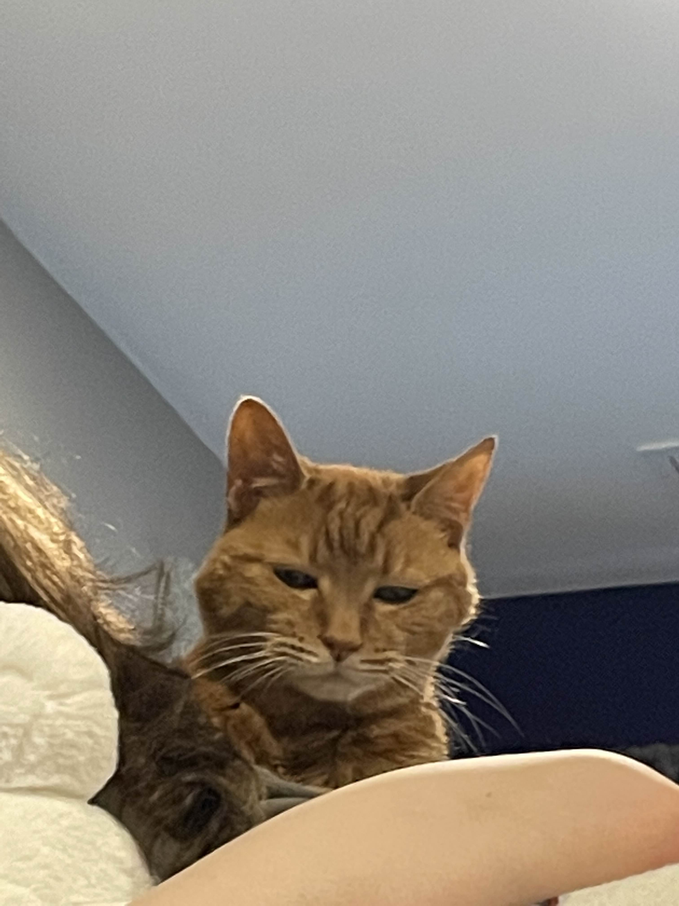
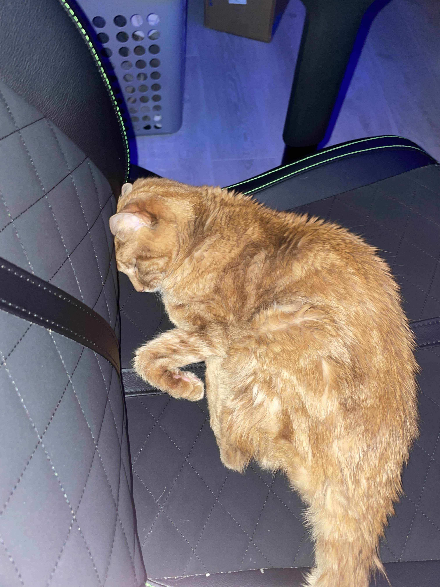
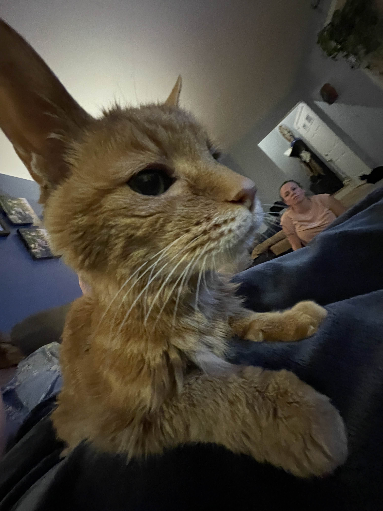

Tigger, although not with us his whole life, is decisively the oldest out of all the pets. Although he looks like a thousand bucks he is actually 20 years old. This is most evident when he is wandering around the house and randomly stops in his place (due to presumably forgetting what he was doing). He is named after the winnie-the-pooh character Tigger; Although, he has far surpassed those roots and has become his own icon. He doesn't particularly care for the other pets, preferring to keep to himself and spend time with humans. He is completely indiscriminant when it comes to approaching people, fearing nobody and just wanting physical affection wherever he can get it.Most of my family will attest to the fact that Tigger and I are best friends. He most often will come spend time with me regardless of what I'm up to. In fact, he actually has sat on my lap for a large portion of me working on these web pages! He is quite the bundle of love and means the absolute world to me.
| LIKES | DISLIKES | TEMPERMENT |
|
|
|